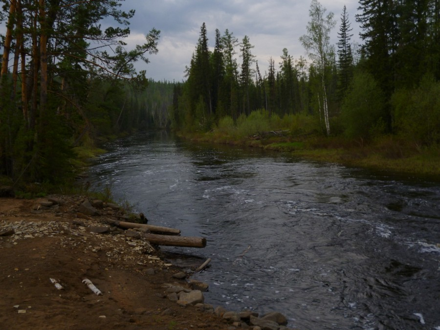

Мое хобби - туристические походы.
Это один из самых интересных и захватывающих видов активного отдыха. Туристические походы позволяют мне насладиться красотой природы, познакомиться с культурой разных народов и получить массу положительных эмоций.
Туристические походы - это не просто отдых на природе, это настоящее приключение. Мы идем по незнакомым тропам, преодолеваем препятствия, ночуем в палатках и готовим еду на костре. Все это делает наш поход незабываемым.
Еще одним преимуществом туристических походов является то, что они помогают нам улучшить физическую форму. Мы занимаемся спортом, ходим пешком, поднимаемся в горы и спускаемся с них. Это не только укрепляет наше здоровье, но и улучшает настроение.
Кроме того, туристические походы помогают нам лучше понимать друг друга и находить общий язык с другими людьми. Мы общаемся, делимся своими впечатлениями и опытом, узнаем много нового о мире вокруг нас.

Наконец, туристические походы - это отличный способ провести время с семьей и друзьями. Мы можем отправиться в поход вместе, разделить все трудности и радости этого увлекательного занятия.
Таким образом, туристические походы - это мое любимое хобби, которое помогает мне наслаждаться жизнью и получать массу положительных эмоций каждый раз, когда я отправляюсь в новый поход.